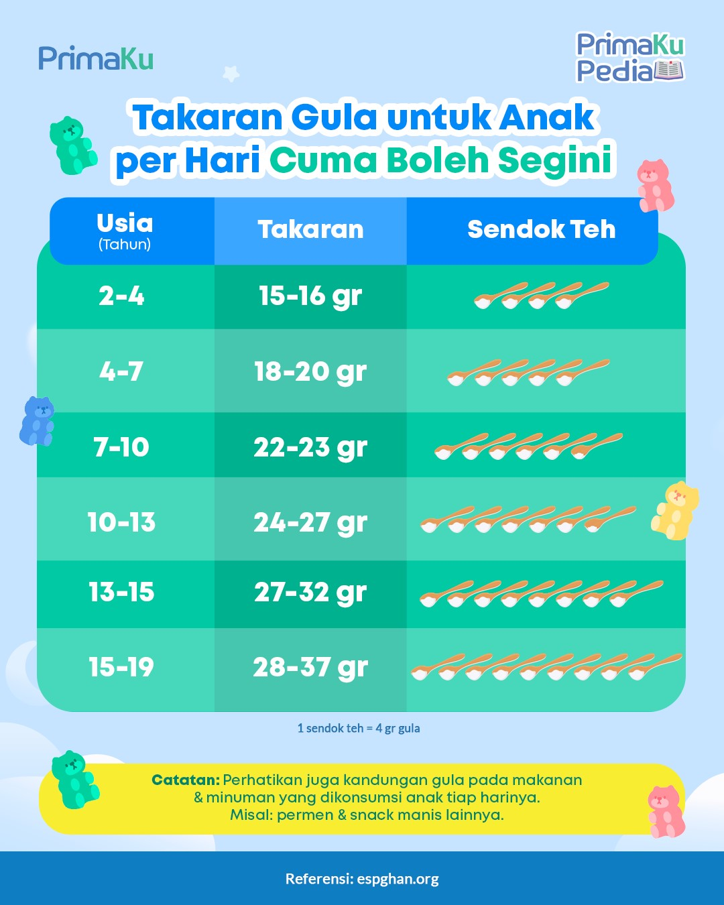

Batasan Konsumsi Gula Harian
Apakah Kamu Sudah Tahu Berapa Batas Jumlah Konsumsi Gula Harian?
Menurut Peraturan Menteri Kesehatan Nomor 30 Tahun 2013, kita disarankan untuk tidak makan terlalu banyak gula setiap hari. Jumlah gula yang aman adalah kurang dari 50 gram, atau sekitar 4 sendok makan per orang dalam sehari. Jadi, jangan makan terlalu banyak makanan atau minuman manis agar tubuh tetap sehat, ya!
